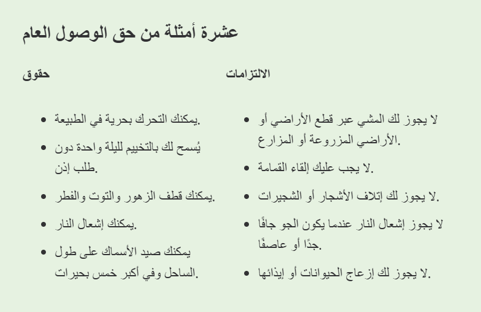

الحق العام
تم إنشاء مصطلح "حق التمتع العام بالطبيعة" (Allemansrätten) في السويد في أربعينيات القرن الماضي، لكن حتى قبل ذلك بكثير، كان من المتعارف عليه أن للجميع الحق في الوصول إلى الطبيعة والاستفادة مما تقدمه، مثل التوت والفطر. غير أن تقاليد السويد في قضاء الوقت في الهواء الطلق تعود إلى ما هو أبعد من ذلك. لا يمكن تحديد متى تحولت رياضة المشي والتزلج الريفي من وسيلة للنقل إلى نشاط ترفيهي يهدف إلى تعزيز الصحة، ولكن من المؤكد أن قضاء الوقت في الطبيعة كان دائماً جزءاً من حياة السويديين.
وقد جاء إقرار حق التمتع العام بالطبيعة نتيجة لتزايد أعداد السكان الذين انتقلوا إلى المناطق الحضرية. واتخذت الحكومة قراراً لتسهيل الوصول إلى الطبيعة لسكان المدن الذين كانوا في تزايد مستمر، وفي عام 1994 تم إدراج هذا الحق ضمن الدستور السويدي.
يمكن تلخيص حق التمتع العام بالطبيعة (Allemansrätten) باختصار في عبارة: "لا تزعج – لا تُفسد". فبينما يمنحك هذا الحق حرية التواجد في الغابات والحقول، فإنه يحمّلك أيضاً مسؤوليات. يُسمح لك بالتجول بحرية في الطبيعة، لكن يجب دائماً إظهار الاحترام للحيوانات والنباتات والبيئة المحيطة.
